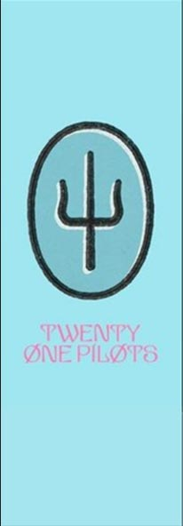

HISTORIA

La historia de Twenty One Pilots es un complejo universo narrativo que se desarrolla a lo largo de sus álbumes, videoclips y presentaciones en vivo. Creado por Tyler Joseph y Josh Dun, el concepto central gira en torno a la lucha interna frente la ansiedad, la depresión y la opresión social, representadas a través de metáforas y simbolismos recurrentes.
BLURRYFACE
TRENCH

SCALED AND ICY

CLANCY